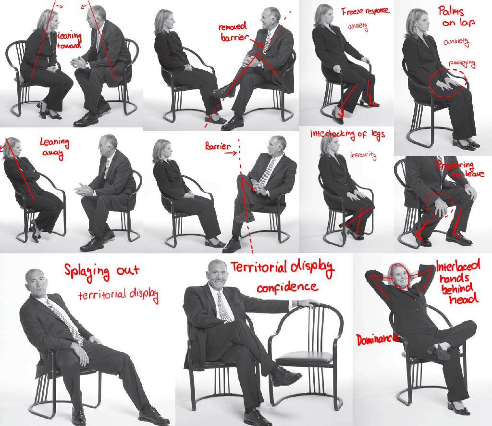
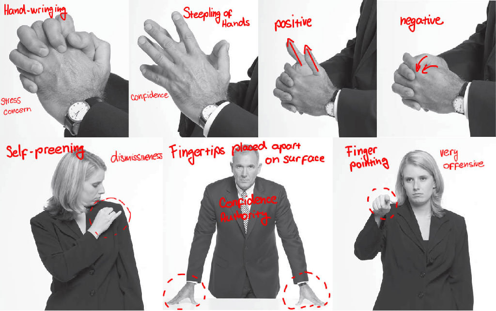
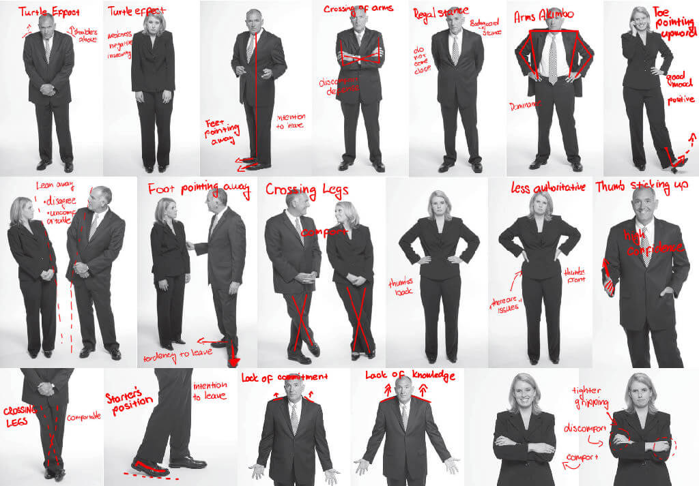
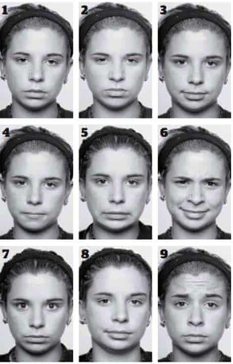
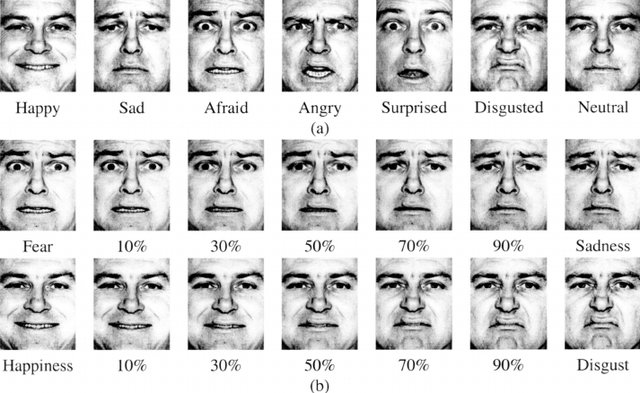
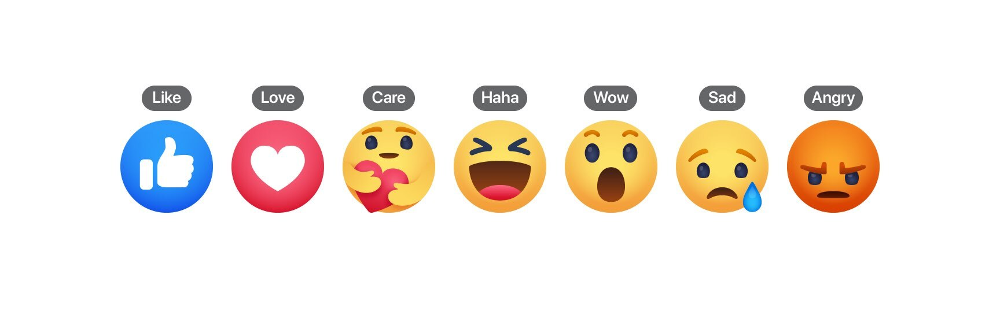
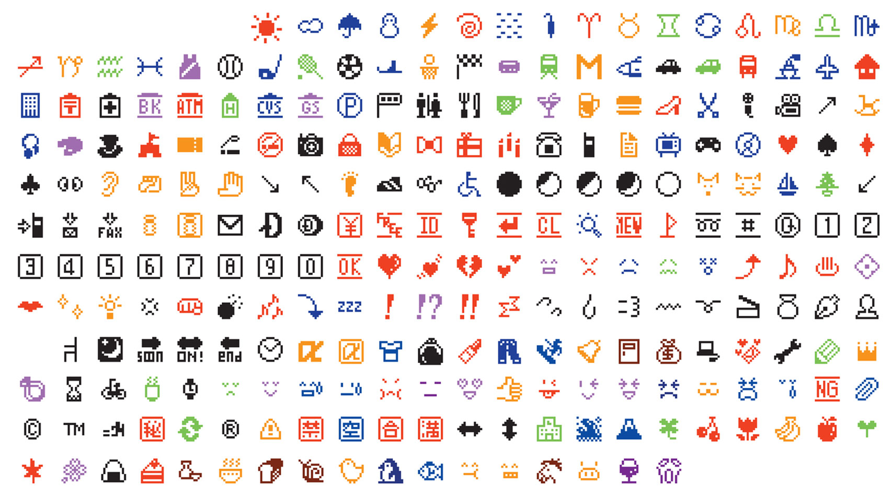
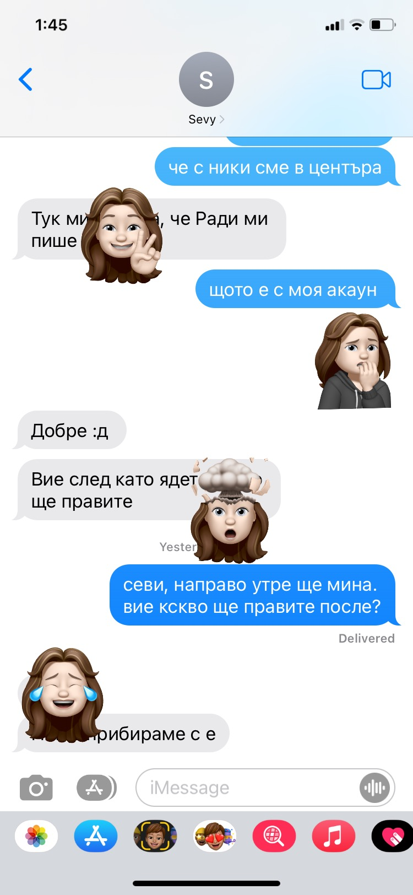
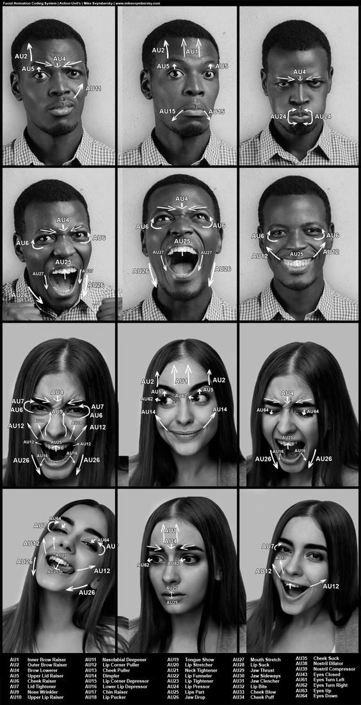
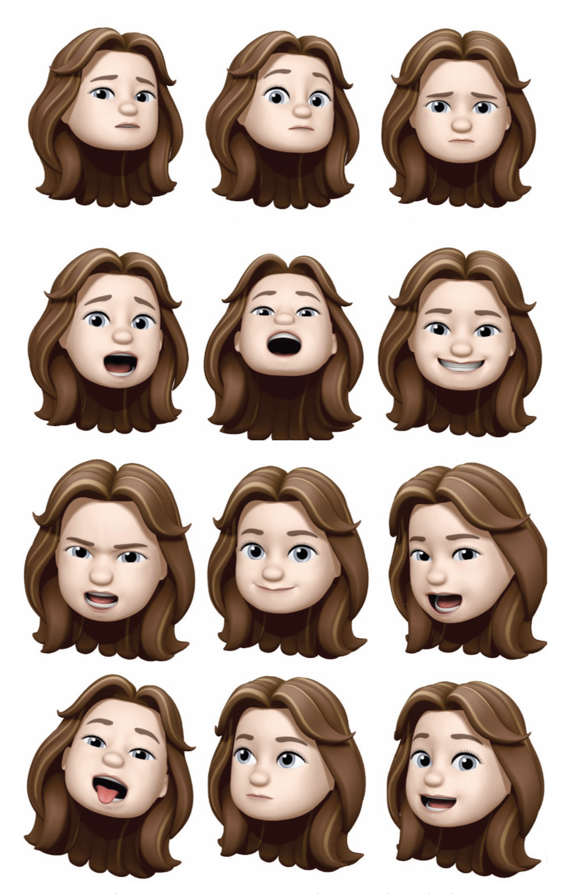

Burgoon, Judee K, Valerie L. Manusov, and Laura K. Guerrero. Nonverbal Communication, 2022, Internet resource.
Anderson, K. E. (2010). Storytelling. In H. J. Birx (Ed.), 21st century anthropology: a reference handbook (pp. 277-286). Thousand Oaks, Calif.: SAGE Publications.
Mendoza Melissa, The Evolution of Storytelling, May 1st, 2015, accessed on https://reporter.rit.edu/tech/evolution-storytelling
Hodge, Felicia S, Anna Pasqua, Carol A. Marquez, and Betty Geishirt-Cantrell. "Utilizing Traditional Storytelling to Promote Wellness in American Indian Communities." Journal of Transcultural Nursing. 13.1 (2002): 6-11. Print.
Mendoza Melissa, The Evolution of Storytelling, May 1st, 2015, accessed on https://reporter.rit.edu/tech/evolution-storytelling
McLuhan, Marshall, and W T. Gordon. Understanding Media: The Extensions of Man. Berkeley, Calif: Gingko Press, 2015. Print.
Burgoon, Judee K, Valerie L. Manusov, and Laura K. Guerrero.Nonverbal Communication., 2022. Internet resource.
Burgoon, Judee K, Valerie L. Manusov, and Laura K. Guerrero.Nonverbal Communication., 2022. Internet resource.
Burgoon, Judee K, Valerie L. Manusov, and Laura K. Guerrero.Nonverbal Communication., 2022. Internet resource.
Phutela, Deepika, The Importance of Non-Verbal Communication (January 14, 2016). The IUP Journal of Soft Skills, Vol. IX, No. 4, December 2015, pp. 43-49, Available at SSRN: https://ssrn.com/abstract=2715432
Hargie, Owen. The Handbook of Communication Skills. Abingdon, Oxon: Routledge, 2019. Print. (Psychologist Paul Ekman and author Wallace V. Friesen and sociologist Erving Goffman)
Walther, Joseph B, and Lisa C. Tidwell. "Nonverbal Cues in Computer-mediated Communication, and the Effect of Chronemics on Relational Communication." Journal of Organizational Computing. 5.4 (1995): 355-378. Print.
Liang, Yuhua J, and Joseph B. Walther. "Computer Mediated Communication." (2015). Print.
Scott E. Fahlman, Professor Emeritus, Carnegie Mellon University, Language Technologies Institute & Computer Science Department, Pittsburgh, PA 15213, https://www.cs.cmu.edu/~sef/
Jibril, Tanimu A, and Mardziah H. Abdullah. "Relevance of Emoticons in Computer-Mediated Communication Contexts: An Overview." Asian Social Science. 9.4 (2013). Print.
Jibril, Tanimu A, and Mardziah H. Abdullah. "Relevance of Emoticons in Computer-Mediated Communication Contexts: An Overview." Asian Social Science. 9.4 (2013). Print.
Hack Reactor, July 15, 2021, The invention of emojis: A brief history, https://www.hackreactor.com/blog/the-invention-of-emojis-a-brief-history
Shevaughn Grant, 2020, The Birth of Emojis, https://gshevaughn.medium.com/the-birth-of-emojis-a744d8ade2a3
Facebook Official Webpage, Reactions, https://www.facebook.com/brand/resources/facebookapp/reactions
Research Abstract
My thesis addresses the notion of non-traditional storytelling and more specifically how it is being reshaped by social media platforms and mass communication.
One of the most distinguished aspects of storytelling is the dialogue between the speaker and the listeners. These two develop a connection with one another through their mutual experience of the story. While the speaker reveals themselves through their story the listener reveals themselves through their understanding and perception of the story.
Social media platforms are laying out different ways for sharing information, emotions, ideas and day to day events. They are not only providing users space to share their story, but also providing room for comments, questions and conversations regardless of the time or location.
With the constant increase of technological development in communication it is important to understand how the shift from face-to-face interactions as a predominant mean of communication to computer-mediated interactions would affect society.
Communication media has changed the interaction between the speaker and the listener. It is shaping the story within media itself and it is continuously transforming social practices.
The question which arises here and that intrigues me the most is how the mediation of social experiences influenced social norms and roles, especially the media's effects on concepts such as social reality, socialization and social change?
Before The
Beginning
Primitive Drawings In Magura Cave, Bulgaria dating between 3000-1200 B.C.
My research began with my personal fascination for the recently developed methods of communication. Particularly on social media platforms. What intrigues me the most is the practice of non-traditional storytelling that we encounter on those platforms.
To better understand what storytelling is, and how it developed into its contemporary form we must go as far back as the beginning of human history. It is considered that storytelling originated long before language. While in the beginning stories were narrated visually, one of the earliest pieces of evidence of storytelling are the cave drawings in Chauvet, France, which date as far back as 30,000 years ago.
Stories later shifted into oral traditions and were passed down from generation to generation by word of mouth. These traditions could take many forms such as epic poems, chants, rhymes, songs and more. In the book "21st century anthropology: a reference handbook" academic Katie Elson Anderson defines storytelling as "the oldest and newest form of arts".
For the pre-literate societies, visual and oral traditions were the only way to pass on important cultural and historical information and it’s one of the main factors for such an ancient records to be preserved up to this day.
Stories marked the beginning and transfer of knowledge one could boldly claim, they were our first teachers, they taught us how to make sense of the world and they brought us together in order to create our first communities.
Storytelling has always been a social activity in its nature. Stories have been a part of humanity since people were able to communicate and respond to the basic urge to explain, educate and enlighten. Stories bring communities together with a shared emotional event and helps them to relate to each other and the world around them.
Aboriginal oral traditions supported through various media such as body painting, song and dance
Snapchat face filters in use
One of the most distinguished aspects of storytelling is the intimacy between the speaker and the listeners. They are seated together, often physically close. They develop a connection to one another. The speaker reveals himself through his story and the listeners reveals themselves through their understanding and perception of the story.
Storytelling is not purely about speaking and listening, but also about acting, seeing and imagining. There is an interactive and performative side to storytelling, which is contributing to the storyline in some way or another. The non-verbal communication such as the amount of eye contact between the speaker and the listener, the use of gestures, the facial expressions as well as the tone of the voice will be adjusted depending on the reaction of the audience.
Stories in the past were not as formal as today. Due to the development of languages as well as the advancing informational technologies, such as the printing press, the camera, the tv, the internet and its social media platforms, stories have transformed drastically into delicately polished units of information. The function of the story has not changed, but it's nature and the means by which storytelling takes place have.
Zoom video platform powers many sorts of communication, including group meetings, chat, phone, webinars, and online events
Social media platforms are not only providing space for users to share their story, but also a room for comments, questions and conversations regardless of the time and location. They are laying out different ways for sharing information, emotions, ideas and day to day events. With the constant increase of technological development in basic communication it is important to understand how the shift from face-to-face interactions as a main mean of communication to computer-mediated interactions would affect the dialogue between the speaker and the listener.
Communication media has changed the interaction between users, it has transformed the relationship between media and social practices and is constantly shaping the story within the media itself. In the book "Understanding Media: The Extensions of Man"
Marshall McLuhan argues that "Societies have always been shaped more by the nature of the media by which men communicate than by the content of communication".
The question that arises from here and intrigues me the most is how the mediation of social experiences influenced social norms and roles, especially the media's effects on concept such as social reality, socialization and social change?
Do You Speak
Emoji?
Nonverbal communication has always been an essential part of the dialogue between the speaker and the listener. In many cases it can successfully replace verbal communication. An estimate 60 to 65 percent of interpersonal communication is conveyed through nonverbal cues. For instance, the reaction of the listener, eye-contact, facial-expressions, gestures, movement, touch, and others.
Most of the time nonverbal behaviors are unconscious and may portray a more accurate presentation of the listener’s attitude and emotional state. It exposes whether the person you are talking to understands you, to what extend they are being truthful and how well are they listening.
Nonverbal communication can be perceived as an integral skill of social competence. According to professors Feldman, R. S., Philippot, P., & Custrini, R. J. ‘social competence’ is a “hypothetical construct relating to evaluative judgments of the adequacy of a person’s performance [within the context of a social interaction]” Other consider social competence as a combination of knowledge and the translation of that knowledge into performance.

The meaning of body postures; Spread from the book “What Every Body Is Saying” by Joe Navarro

The meaning of hand gestures; Spread from the book “What Every Body Is Saying” by Joe Navarro

The meaning of body standing position; Spread from the book “What Every Body Is Saying” by Joe Navarro
In both cases, nonverbal and verbal skills are demonstration of social competence, since social interactions include both verbal and nonverbal cues. For example, certain nonverbal rules exist within the formal workplace. Body gestures can carry significant amount of information regarding the individual. When nonverbal signals match up with the words, it increases trust and clarity.
According to professor Deepika Phutela "Nonverbal communication involves multiple channels, is continuous and more ambiguous in nature, and often contradicts the spoken word. When nonverbal and verbal communications conflict, individuals tend to rely on nonverbal clues as a means to interpret the true meaning of a communication."

Micro Expression Test, Paul Ekman
It is considered that nonverbal communication might have different meaning in different situations, therefore each situation determines its own set of rules. It is of great importance that nonverbal communication is not treated as a separate and independent form of communication, but instead must be considered in the context in which it occurs.
In "The Handbook of Communication Skills" professor Owen Hargie argues that "An important distinction in viewing nonverbal behavior as communication is that between the encoder and the decoder. The encoder is analogous to an actor or impression manager, producing and ‘sending’ the behaviors to be interpreted. The decoder is analogous to an observer ‘receiving’ the presented behaviors and interpreting them in some fashion. Within the context of the encoder-decoder distinction, a major concern is that of intention and whether intended and unintended messages obey the same rules and principles of communication.”
Concluding from this we can say that most social interactions among individuals in the natural world involve nonverbal behavior as part of the absolute communication. Thus, both intentional and unintentional units of information are constantly being given off by either one of the participants and have integral role in the absolute communication between the givers.
The shift from face-to-face interactions as a main mean of communication to computer-mediated interactions encouraged many studies upon the subject of nonverbal communication cues and the extent of their presence in computer-mediated communication. Many studies describe such communication to be significantly lacking nonverbal cues, which affects the nature of interpersonal interactions via the medium.”
Professor Yuhua Jake Liang describes that "More recent theories focus on how message senders exploit the computer-mediated communication medium in order to create messages and relationships actively." Since it has becoming clear that the process of communication is complex and it goes beyond plain speaking, users' behavior suggested that new methods of assisting more expressively interaction need to be adopted within computer-mediated communication.
In 1982 professor Scott Fahlman, a computer scientist at Carnegie Mellon University proposed the use of 'emoticons' ':-)' and ':-(' in posts and email messages. The term 'emoticons' is a short for 'emotional icons' and it refers to a string of keyboard characters used in computer-mediated communication.
Due to the lack of vis-à-vis situation attributes in such forms of communication the emoticon has been subsequently introduced to substitute the absence of gestures and facial attributes. The 'emoticon' symbol is incorporated as a visual cue and its purpose is to augment the meaning of textual messages.
Scott Fahlman, the guy who created the first emoticon
In the article "Relevance of Emoticons in Computer-Mediated Communication Contexts: An Overview." researcher Ahmed Tanimu Jibril describes that "A number of research studies have signified the importance of nonverbal codes in comprehending “the meaning and nature of the message in Face to Face”. A communication theory such as Social Presence Theory (SPT), for instance, has suggested that Computer-Mediated Communication (CMC) is short of “contextual information” and that the medium is disruptive for understanding the content and nature of messages”.
However, later studies have indicated that emoticons are capable of providing such information, thus improving computer-mediated communication. Therefore, emoticons have turned out to be socioemotional suppliers in messages context, as well as a significant method of conveying emotions in computer-mediated communication.

Example prototypical expressions of six basic emotions and a neutral face for actor ‘‘J. J.’’ in Ekman and Friesen’s POFA (Ekman & Friesen, 1976)

Facebook Reaction buttons
Although emoticons can be traced back to chatrooms in the 1990s, when primitive emoticons were used in conversations as a string of keyboard characters, the concept of emoticon became globally mainstream a few years later.
Japanese designer Shigetaka Kurita is considered to be the father of today's 'emoji'. In 1999 a Japanese cell phone company called 'NTT DOCOMO' released a set of 176 emojis for mobile phones and pagers. Shigetaka Kurita used illustrations and pictograms in order to create the first emoji library. His pixelated emoji library was the ultimately design that gave rise to the emoji we know today.

Designed by Shigetaka Kurita; set of 176 emojis for mobile phones and pagers
iOS Emoji Set, 2011
In 2011 Apple introduced their first official emoji keyboard to iOS taking the official emoji count with the introduction of 722 emoji characters. Today there are more than 3,000 emoji representing different individuals, animals, cultures, activities and countries.
More recent implication of emojis began around 2016 when Facebook introduced, they’re extended design of the like button with five more ways to react to a post: 'love', 'haha', 'wow', 'sad' and 'angry'. According to Facebook official user guide "Reactions are an extension of the Like Button to give people more ways to share their reaction to a post in a quick and easy way."
Shortly after Facebook’s ‘Reactions’, Apple released their personalised 'Memoji' avatar. This gave the freedom for users to customize their 'emoji' to match their personality and mood.
We might argue that this attempt was a step further into creating more effective nonverbal communication cues within computer-mediated interactions, but it is important to remark that the 'Memoji' avatar can be altered to the extent that the software allows you to. There are certain face expressions recognized and adopted by their system, so any emotional expressions in between still cannot be captured successfully.

Screenshot of customised memoji reactions; my customised memoji avatar
Emojis are starting to possess a crucial role within the expression of online interactions. However, there are two fundamental points to consider while investigating the emoticon as an adaptation of nonverbal communication cues in computer-mediated interactions.
Little is elaborated upon the ways in which emojis impact text interpretation and how accurately they manage to capture and represent human emotion.
Users are still limited to the variations of emoticons available within the emoji set in order to express their emotional state. This variation in some cases might lack to express the more complex specter of emotions which are being experienced by the individual.
Thus, users are forced to frame their emotions within the limitations of the media in order to express them. As a consequence of which, in many cases of computer-mediated communication incorrect interpretation by the users and misunderstanding might occur.
It is also important to emphasize the fact that emojis when treated as nonverbal communication cues are always intentionally used to send a specific message to the receiver. Since we've previously discussed that non-intentional signals which can be observed in vis-à-vis setting can offer considerable information about the participants and have integral role in the absolute communication between the giver and the receiver. I dare to conclude that computer-mediated communication is still lacking significant quantity of the nonverbal cues within the absolute communication, even after the attempts for adopting nonverbal methods of expressions.

FACS action unit exercises from Scott Eaton class

Recreating the same exercises to test the extend to which Memojis can capture facial expressions